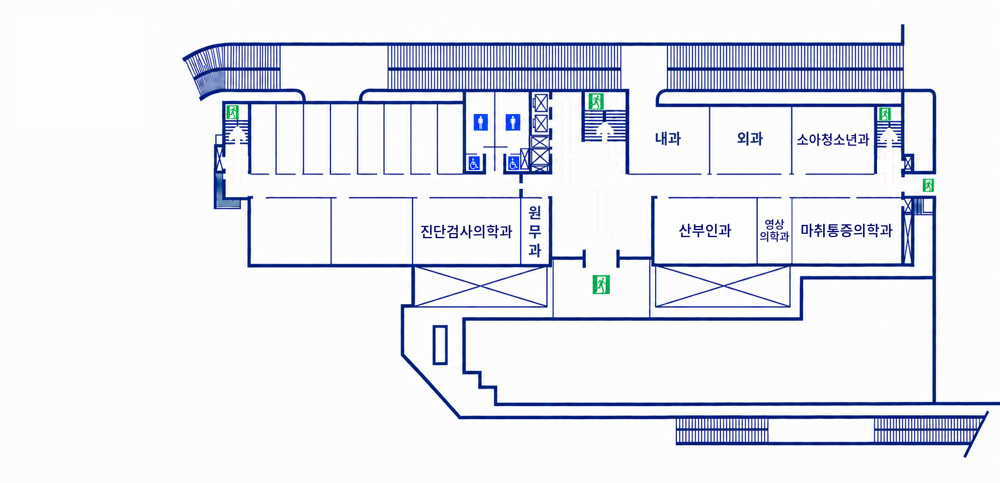

60
🇰🇷
🇺🇸
🇯🇵
🇨🇳
무엇을 도와드릴까요?
📋
접수 안내
🧭
위치 안내
🎤
버튼을 누르고 가고 싶은 곳을 말씀하세요
질문
뒤로
듣고 있어요…
취소
확인
뒤로
처음으로
🔒 관리자 인증
확인
관리자 (간호사 전용)
환자 데이터셋
예약 명단
대기 현황
정렬
이름순
주민번호순
전화번호순
예약 등록
진료과 선택
예약 저장
정렬
이름순
주민번호순
전화번호순
새로고침
관리자 (의사 전용)
진료과를 선택하세요
진료과 변경
🔔 진료 호출 안내
증상을 설명해주세요
입력
뒤로
처음으로
뒤로
처음으로
🚨
처음으로
처음으로

네
아니오
🤖
이동합니다
처음으로